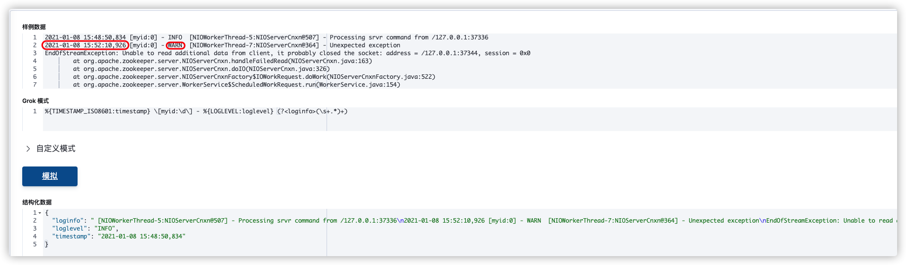
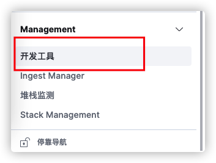
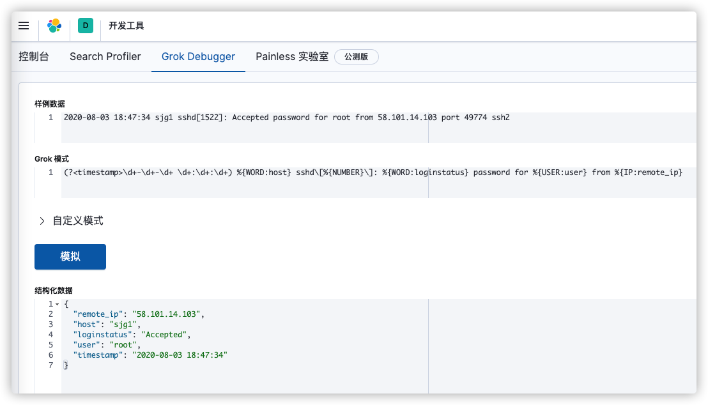
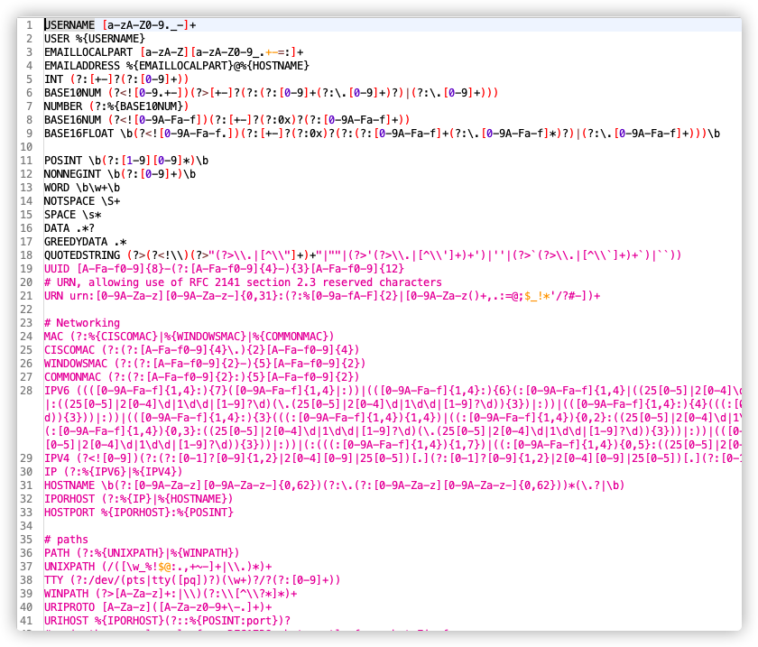

ELK使用笔记
filebeat
输出
1 | filebeat.inputs: |
多行日志合并
1 | 日志模板 |
| ^\d+-[a-zA-Z]+-\d+ \d+:\d+:\d+.\d+ | 07-Aug-2020 20:15:41.950 |
|---|---|
| 正则匹配以 07-Aug-2020 20:15:41.950 | 不匹配的的行合并匹配行, |
例子2 zookeeper日志
1
2
3
4
5
6
72021-01-08 15:48:50,834 [myid:0] - INFO [NIOWorkerThread-5:NIOServerCnxn@507] - Processing srvr command from /127.0.0.1:37336
2021-01-08 15:52:10,926 [myid:0] - WARN [NIOWorkerThread-7:NIOServerCnxn@364] - Unexpected exception
EndOfStreamException: Unable to read additional data from client, it probably closed the socket: address = /127.0.0.1:37344, session = 0x0
at org.apache.zookeeper.server.NIOServerCnxn.handleFailedRead(NIOServerCnxn.java:163)
at org.apache.zookeeper.server.NIOServerCnxn.doIO(NIOServerCnxn.java:326)
at org.apache.zookeeper.server.NIOServerCnxnFactory$IOWorkRequest.doWork(NIOServerCnxnFactory.java:522)
at org.apache.zookeeper.server.WorkerService$ScheduledWorkRequest.run(WorkerService.java:154)
| %{TIMESTAMP_ISO8601:timestamp} [myid:\d] - %{LOGLEVEL:loglevel} (?
(\s+.)+) | |
| ———————————————————— | —- |
| (\s+.)+ 匹配了 WARN后的所有内容 | |
正则基础
| \S：匹配非空 | |
| —————————————– | —- |
| \d：匹配单个数字 | |
| +：匹配前一个字符至少出现一次 | |
| ?：匹配前一个字符最多出现一次 | |
| *：匹配前一个字符出现任意次数（包括０次） | |
| {n}：匹配妻哪一个字符出现n次 | |
Grok提取利器
- 如何日志无法json化输出就需要用到正则匹配提取所需字段了
Kinaba自带一个正则匹配工具,并有内置的正则


| (? |
正则匹配模式 |
|---|---|
| %{WORD:host} | Grok内置匹配模式 |
| 目标 | grok | 正则 |
|---|---|---|
| 2021-01-08 07:16:24,407 | %{TIMESTAMP_ISO8601:time} |
/usr/share/logstash/vendor/bundle/jruby/2.5.0/gems/logstash-patterns-core-4.1.2/patterns/grok-patterns

可以视情况混合使用两种匹配模式
logstash
Filter-grok
1 | filter { |
filter-mutate
1 | filter { |